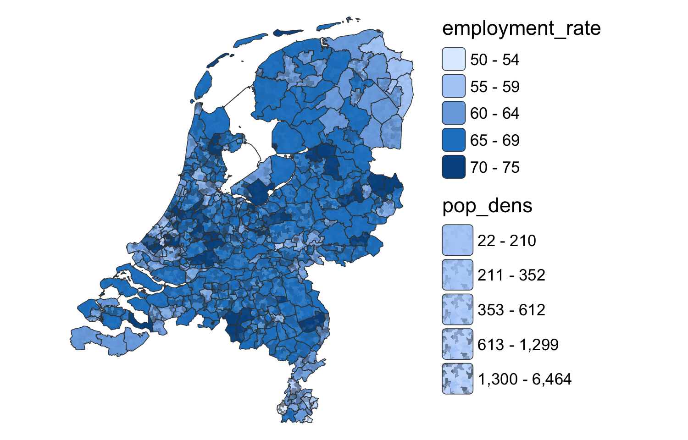

tm_shape(NLD_muni) +
tm_polygons(
fill = "orange"
)uRos2026 Session A5: Spatial and Small Area Analysis
Paris, 20 November 2026
Statistics Netherlands (CBS)
"plot" → "view"Same code Leaflet ttm() / rtm() to switch
| tmap.mapgl | "maplibre""mapbox" |
| tmap.mapgl | tm_polygons_3d() |
| tmap.cartogram | tm_cartogram()tm_cartogram_ncont()tm_cartogram_dorling() |
| tmap.glyphs | tm_donuts()tm_pies()tm_flowers() |
| tmap.networks | tm_network()tm_edges()tm_nodes() |
| tmap.networks | sfnetworks |
| tmap.sources | remote, tiled, streaming (e.g. Overture Maps) |
"maplibre"heightHeight = density → volume = count colour free for a second variable
~60 km cells height and colour: inhabitants per km² globe projection
10 km equal-area grid (LAEA) hover over a city
New map variables: pattern, pattern_col, pattern_density, pattern_size

Idea: texture = uncertainty colour stays readable all modes, also 3D roofs
| Map variables: | height |
= | population density |
fill |
= | difference with the Dutch average |
"mottle"Wider interval → more ‘poorly painted’ roof Average colour unchanged
"sketch"Wider interval → sketchier roof